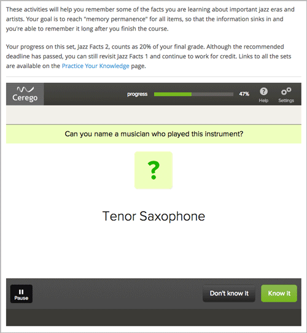

你可能已经发现或开发了想要添加到你的在线课程的外部学习应用程序。 或者你有格式不是PDF的电子版教科书。 你可以使用学习工具互通组件，来向Studio添加外部的应用程序或教课书。 LTI 组件是基于 IMS Global Learning Tools Interoperability 1.1.1 版本的。
你有多种方式使用LTI组件。
例如，下面的LTI组件包括一个用于学生互动的Cerego工具。
在你用外部的LTI供应商创建LTI组件之前，你需要以下信息。
启动 URL (如果这个LTI组件需要对学生的回答进行评分)。 你从LTI的供应商处获得启动URL。 T这个启动URL是Studio发送到外部的供应商，使供应商可以发送回学生的成绩。
LTI 护照 保险密钥。 这个保险密钥三部分组成: LTI ID, 客户端密钥， 客户端机密。
LTI ID。 这是你创建引用外部 LTI 供应商的值。 你应该创建一个简单易记的 LTI ID 。
LTI ID可以包含大写和小写字母数字字符，以及下划线（_）。 它的长度没有限制。 比如你可以创建如 test_lti_id 这样简单的LTI ID， 你的LTI ID还可以是一串数字或者一串字母比如 id_21441 或者 book_lti_provider_from_new_york。
客户端密钥。 该值是您从LTI提供商获取的字符序列。 客户端密钥用于身份验证，并且可以包含任意数量的字符。 例如，你的客户端密钥可能是这个样子： b289378-f88d-2929-ctools.school.edu 。
客户端机密。 该值是您从LTI提供商获取的字符序列。 客户端密钥用于身份验证，并且可以包含任意数量的字符。 例如，你的客户端机密可以简单如 secret， 它还以可以由一串数字或字符组成比如 23746387264 和 yt4984yr8 。
按下面的格式结合LTI ID，客户端密钥和客户端机密，来创建 LTI 护照 保险密钥 (一定要包括冒号)。
lti_id:client_key:client_secret
LTI 护照 保险密钥可以类似下面示例中给出的形式：
test_lti_id:b289378-f88d-2929-ctools.school.edu:secret
id_21441:b289378-f88d-2929-ctools.school.edu:23746387264
book_lti_provider_from_new_york:b289378-f88d-2929-ctools.company.com:yt4984yr8
创建你课程的LTI组件需要三个步骤。
Note
如果 高级模块列表 区域已经有了文本, 直接将光标放在右引号的最后一个项目后，再输入一个逗号，后跟``”lti”`` (请确保你包括引号) 。
页面会自动刷新。 在页面的顶部会有你已经保存了修改的通知。
要注册外部的供应商，你需要将 LTI 护照 保险密钥添加到课程的高级设置中。
在 高级设置 页面， LTI 护照 保险密钥。
将光标放在括号之间。
在两个引号之间输入 LTI 护照 保险密钥。
例如， LTI 护照 的文本应该类似于下面的样例：
"test_lti_id:b289378-f88d-2929-ctools.umich.edu:secret"
如果你有多个LTI供应商，用逗号分隔开每个**LTI 护照** 保险密钥。 确保每个密钥都加上了引号。
"test_lti_id:b289378-f88d-2929-ctools.umich.edu:secret",
"id_21441:b289378-f88d-2929-ctools.school.edu:23746387264",
"book_lti_provider_from_new_york:b289378-f88d-2929-ctools.company.com:yt4984yr8"
页面会自动刷新。 在页面顶部会出现一个显示你已经保存了更改的通知，和 LTI 护照 保险密钥的输入框。
| 设置 | 说明 |
|---|---|
| Accept grades past deadline | 指定是否允许第三方系统在超过最后期限后还公布成绩。 默认情况下设置为 True 。 |
| Button Text | 为启动第三方LTI应用的按钮输入一个自定义标签。 |
| Custom Parameters | 使您可以添加一个或多个自定义参数。 例如，如果你添加了一个电子书，你可以设置一个自定义参数来打开你想要的页码。 你还可以用自定义参数来修改LTI组件的背景色。 每个自定义参数都有一个键和一个值。 你必须以下面的格式来添加键和值。 key=value
例如，自定义参数可能类似于下面的样子： bgcolor=red
page=144
点击 添加 来添加自定义参数。 |
| Display Name | 指定组件的名称。 该名称作为标题显示在问题上面，并作为学习顺序的提示在 课件 页面顶部显示。 唯一的，描述性的 Display Name 能帮助你快速的识别问题并准确的进行分析。 |
| Hide External Tool | 表示是启动外部工具还是使用该组件作为一个占位符用于与外部评分系统同步。 如果你将该值设为 True , Studio 会隐藏 启动 按钮 和任何这个组件的IFrame。 默认情况下该值为 False 。 |
| LTI Application Information | 第三方应用的说明。 如果应用程序要求提供用户名或电子邮件地址，使用这个字段来告知学生，为什么他们的信息将被转发给第三方应用程序。 |
| LTI ID | 指定LTI ID的外部LTI提供商。 这个值必须和你在 高级设置 页面键入的LTI ID相同。 |
| LTI URL | 指定该组件要启用的外部工具的URL。 这个设置在 Hide External Tool 设置为False时可用。 |
| Open in New Page | 指定问题是否在一个新的页面中打开。 如果你设置这个值为True，那么学生会在一个新的窗口中打开LTI链接的内容。 如果你设置这个值为False，则LTI在当前页面中的一个IFrame中打开。 这个设置在 Hide External Tool 设置为False的情况下可用。 |
| Request user’s email | 如果 Open in New Page 被设置成了True，你还可以获取用户信息。 将这个值设置为True来获取用户的电子邮箱。 |
| Request user’s username | 如果 Open in New Page 被设置成了True，你还可以获取用户信息。 将这个值设置为True来获取用户姓名。 |
| Scored | 指示LTI组件是否从外部的LTI系统获取数字形式的分数。 默认情况下这个值为False。 |
| Weight | 指定问题的满分。 默认情况下一个可评分的LTI问题的满分为1分，学生获得的分数会在0到1之间。 这个设置在 Scored 的值为True时可用。 有关问题的权重和计算得分点的详细信息，请参阅 问题权重 。 |
{kind=link}